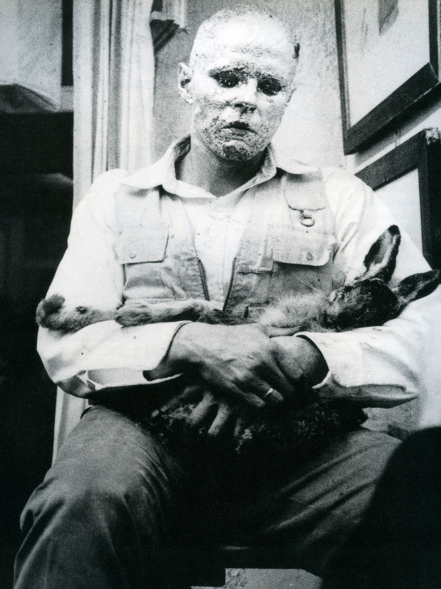
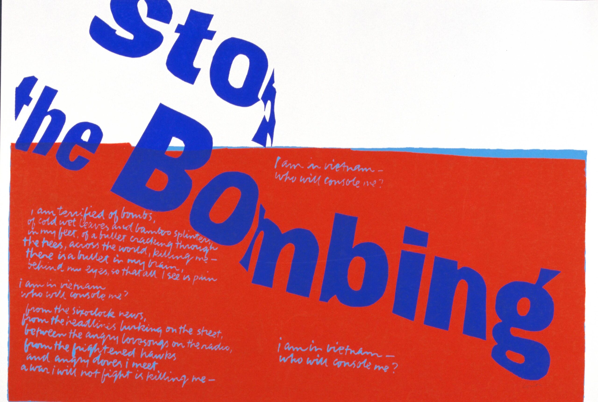
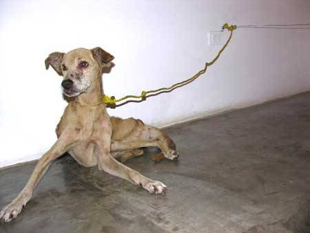
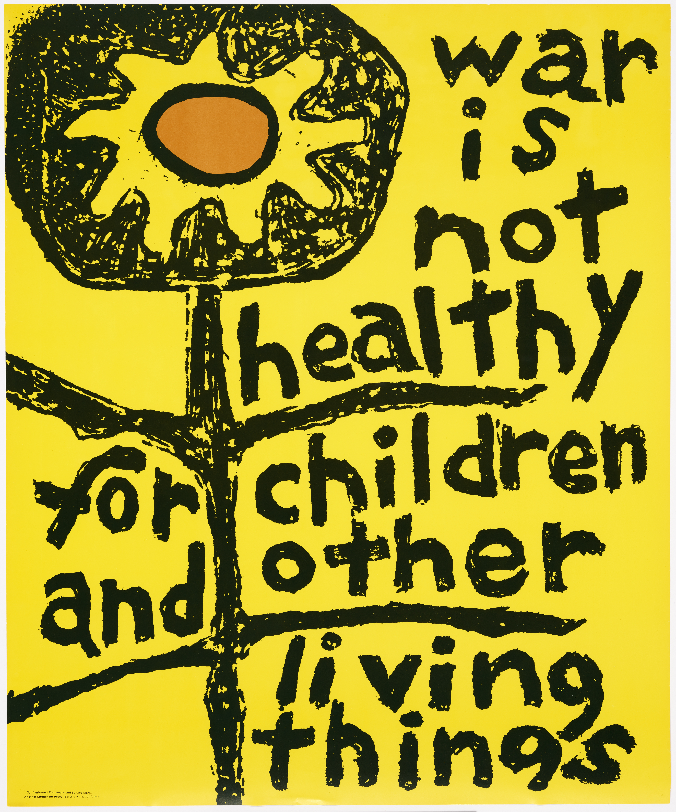
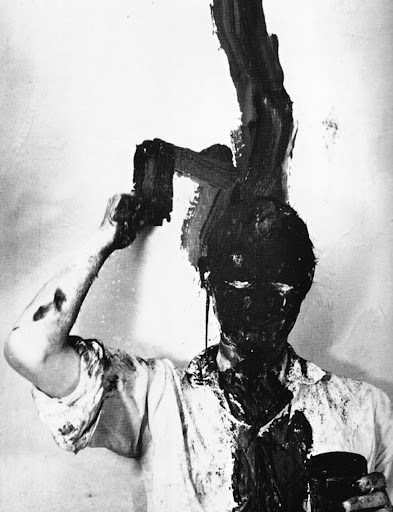
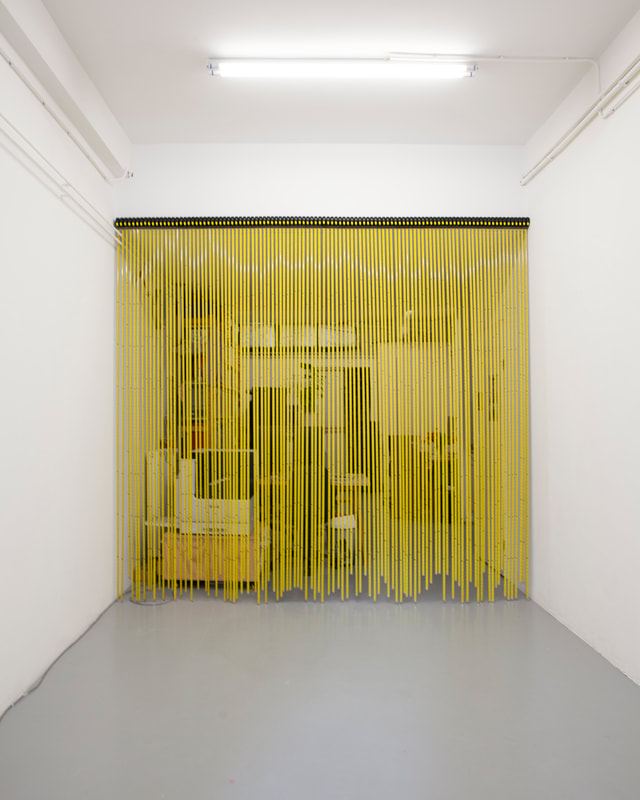
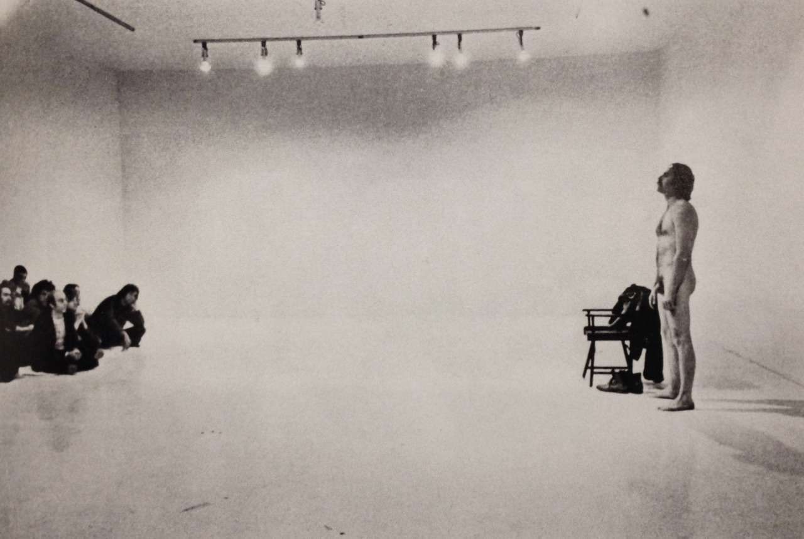
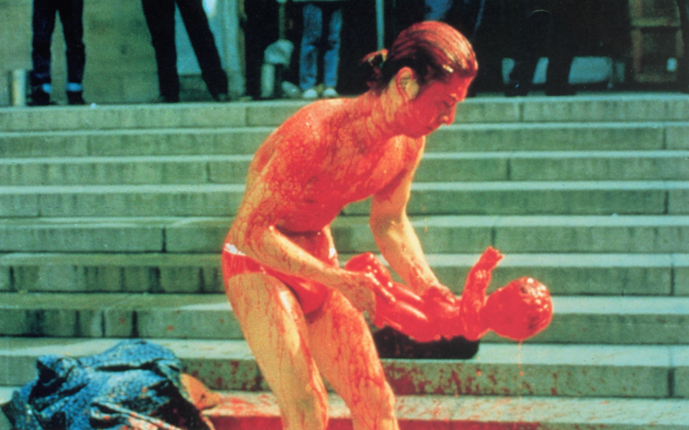
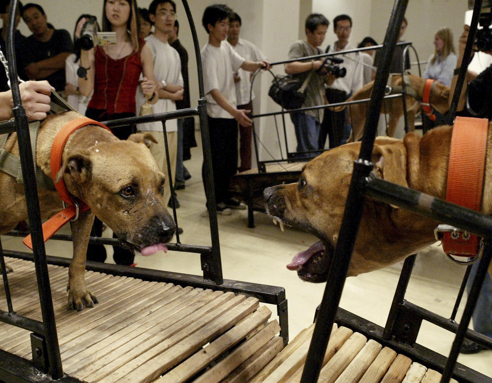
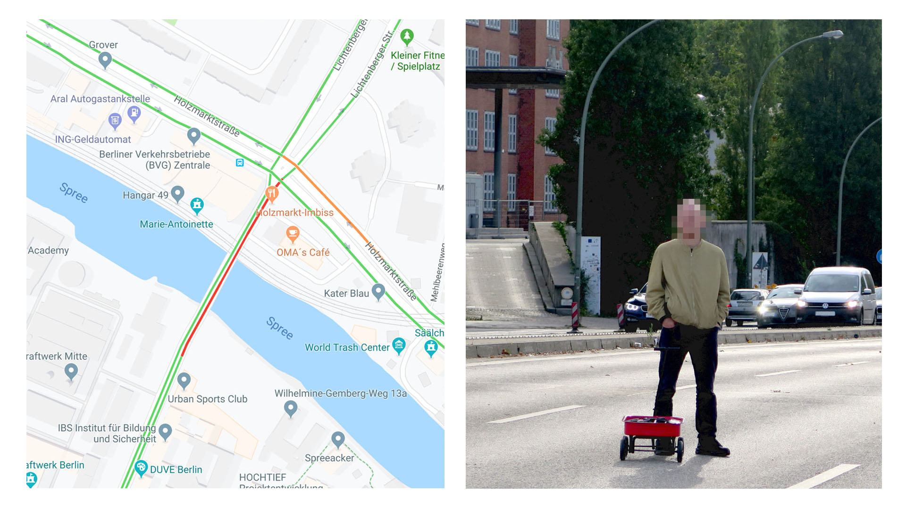

How to Explain Pictures to a Dead Hare [1965] - Joseph Beuys

Stop the Bombing [1967] - Sister Corita Kent

Exposición No. 1 [2007] - Guillermo Vargas

War Is Not Healthy for Children and Other Living Things [1968] - Lorraine Schneider

Actionism The Sixties, Buch [1960] - Günter Brus

Curtain [2022] - Willem de Haan

Attempted Public Erection [1972] - Wolfgang Stoerchle

Angel [1993] - Zhang Huan

Dogs That Cannot Touch Each Other [2003] - Sun Yuan & Peng Yu
Work No. 227: Lights going on and off [2000] - Martin Creed

Google Maps Hacks [2020] - Simon Weckert
pssst...try scrolling down...
← BACK
© lolsquid art collection, founded 2016